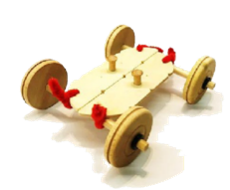
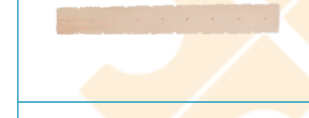
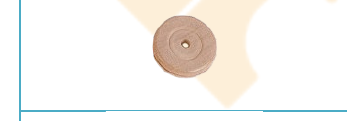
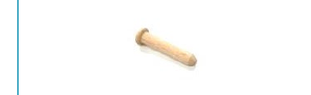
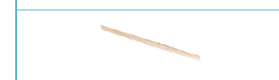
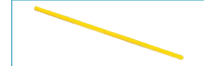
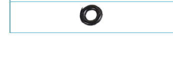
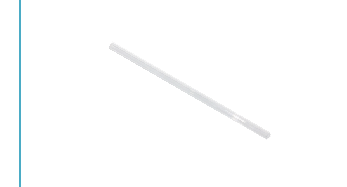

搖搖平行車教案
編號 03-P2-02 ・ 難度：高級
本教案以「搖搖平行車」為主題，運用平行四邊形連桿原理，讓孩子觀察車身在推移時的變形現象，並延伸探討三角形結構為何較四邊形穩固，結合科學與工程思維。

適合年級
5 歲以上（親子）
教學時間
60 分鐘
難度
高級
教學領域
S 科學・T 技術・E 工程・A 藝術・M 數學
教案類型
STEAM 親子創客教案
課程內容
平行與連桿原理介紹（S）・ 鋸切、砂磨、鑽孔技巧（T）・ 組裝、釘鎚技巧（E）・ 塑型彩繪（A）・ 點數、刻度與三角形四邊形結構（M）
課程流程
木條板鋸切與鑽孔 ・ 輪軸組裝 ・ 毛根固定連桿結構 ・ 啟動測試觀察變形 ・ 加裝風帆大變身 ・ 三角形與四邊形結構討論
課程材料
木條板 ×1 片 ・ 木輪子 ×4 個（桃花心木） ・ 木釘子 ×2 個 ・ 木棒 ×2 支 ・ 毛根 ×2 條 ・ 油封圈 ×4 個 ・ 吸管 ×2 支
其他材料與工具：砂紙、白膠或保麗龍膠、剪刀、鉛筆、橡皮擦、色筆、鑽孔機或手搖鑽、0.3 公分鑽頭、手工線鋸、牛皮紙板
延伸學習
三角形與四邊形結構穩定性比較 ・ 風力驅動原理探索 ・ 建築與生活中的穩固結構觀察
學習向度與目標
完整教學步驟
材料清單

木條板
1 片

木輪子
4 個
國產木材：桃花心木

木釘子
2 個

木棒
2 支

毛根
2 條

油封圈
4 個

吸管
2 支
其他材料與工具：砂紙、白膠或保麗龍膠、剪刀、鉛筆、橡皮擦、色筆、鑽孔機或手搖鑽、0.3 公分鑽頭、手工線鋸、牛皮紙板
情境引導
很多車正在跑道上奔馳呢！原來是一場激烈的比賽。相較於一般的車，搖搖平行車運動方式可不同呢！想一想能用什麼方式，讓搖搖平行車更快速。快來成為跑最快的車手，贏得這場比賽吧！
活動一：製作搖搖平行車
- 將木條板，鋸切成 2 支 12 公分(4 格)。
- 在 2 支木條板上兩端各鑽一個約 0.3 公分的洞。
- 依照想要的車型，砂磨 2 片木條板，並砂磨粗糙與銳利的邊緣。
- 將木棒套進吸管內，並依序將木輪子與油封圈套進左右兩端的木棒，完成兩組車的輪軸。
- 剪 4 條約 5 公分的毛根穿過木條板兩端的小洞，扭轉固定於板子與車軸。
- 將 2 個木釘子分別黏在木條板上。
活動二：啟動搖搖平行車
- 將車子放在桌面上，輕輕推一下，觀察車子移動順不順暢？
- 試著調整毛根的鬆緊度，並用手推移木棋子，發現車體有什麼變化？
- 變形的車子，依然可以順利走動嗎？走的路線是如何？
活動三：搖搖平行車大賽
- 在地上繪製直道和彎道的車道，看誰的車速度最快？
活動四：搖搖平行車大變身
- 想一想，可以在車身裡加什麼，讓車身不會變形？
- 用牛皮紙板剪一個風帆，並用雙面膠黏在車上。
- 試著用嘴巴吹吹看，風帆車會動嗎？
- 再用力吹吹看風帆的下半部分，風帆車跑得如何？
活動五：討論
- 當搖搖平行車身安裝風帆後，為什麼就不容易變形？
- 利用筷子和橡皮筋(請自備)試做成三角形與四邊形，試著拉扯看看有什麼不同？
- 建築中也常遇見三角形的結構，這種結構是否較為堅固呢？
注意事項
- 使用線鋸、剉刀等工具時，要戴好護目鏡、手套等護具，並聽從大人的指示，千萬不可讓孩子自行操作，以免發生危險。
- 在塑型的特徵的時候，可以使用砂紙包覆木棒或小木塊，製作成塑型工具。砂磨時要注意避免手不小心砂磨到。